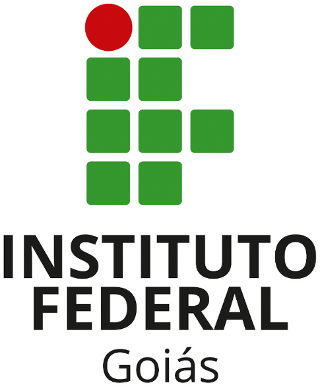

Pedido de Melhoras no Campus IFG-Formosa
Atualmente estou cursando o Ensino Superior de Tecnico em Analize e Desenvolvimento de Sistemas e tenho alguns pedidos que gostaria de fazar ao campusm, é todos esses pedidos que irei fazer serão com o intuito de fazer com que o ensino seja mais eficaz e o nosso desepenho seja realmente mais efetivos:
Pedidos;
Laboratorios com Pcs que funcionem em sua totalidade: Muitos dos pcs de alguns laboratorios não estão funcionado e todas as aulas que tempos nestes labs sempre são prejudicadas pois muitas das vezes ficamos a proucura de pcs que realmente funcionem e também isso implica sempre na possíbilidade de que um de nós acabe por ficar sem uma maquina, e, pensando principalmente nas turmas do 2° Periodo pois os alunos estão em grande numero em sua totalidade.
Recursos para visitas tecnicas: Atualmente não vejo nenhuma oportunidade de visistas tecnicas e o que sempre escuto é que o IFG não tem recursos para poder fazer essas atividades, assim peço que seja vista a possíbilidade de requerir mais recursos.
De: Pedro Henrique Barros de Oliveira Ribeiro
Para: IFG Campûs Formosa-GO
